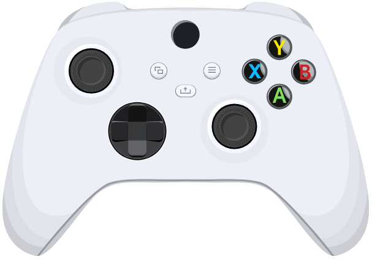

Detect, identify and test your controllers
InputOS is a Windows application (10 and 11, 64-bit) with a live tester, official profiles and automatic updates.
Download InputOS for WindowsFile InputOS-win-Setup.exe · All versions

Compatible controllers
These controllers have an official profile:
- DualShock 4
- DualSense (USB and Bluetooth)
- DualSense Edge
- Xbox Elite Series 2
- Xbox Series S/X (USB only; Guide and Share are not available)
Compatibility may vary with the exact model and hardware revision. Other controllers seen by Windows can be set up with “Suggest Controller”, over USB. The Nintendo Switch Pro is under development and is not supported.
Suggest a controller
No official profile for your controller? InputOS shows a warning and a Suggest Controller button.
- Plug the controller in over USB and open InputOS.
- Click “Suggest Controller” and pick a model.
- Follow the steps: stick calibration, then press each control.
- Save the profile: you can test the controller locally while waiting for an official profile.
- If you wish, click “Send Diagnostic” to send it to the developers.
Sending is always optional. It creates a public GitHub issue.
Privacy
InputOS sends nothing until you click “Send Diagnostic”. Saved profiles stay on your PC, in Documents\InputOS\profils.
The diagnostic is sent over HTTPS to a Cloudflare service that creates a public issue on GitHub: anyone can read it.